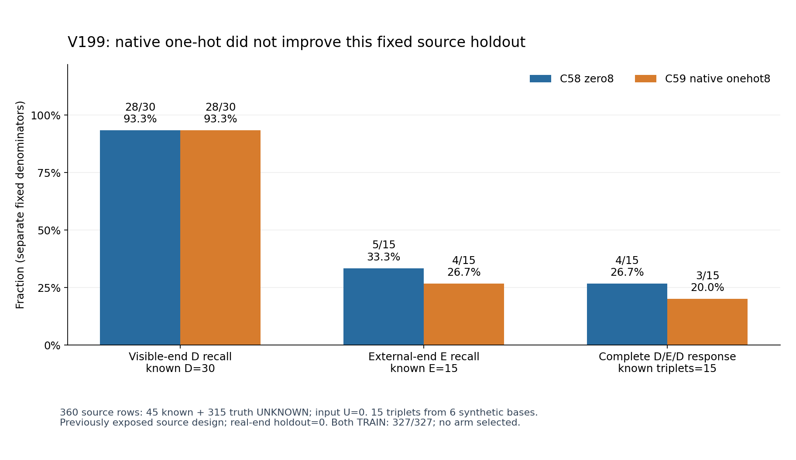

V199: native 번호 조건의 source 대조 결과
native 번호를 더한 팔은 이번 고정 source HOLDOUT에서 개선되지 않았다. C58 zero8과 C59 native onehot8은 TRAIN327개 known을 모두 맞혔지만, HOLDOUT E recall은5/15(33.3%) 대4/15(26.7%), D/E/D 세 상태를 모두 맞힌 triplet은4/15 대3/15였다. 다른 실패 원인이나 native 조건 전반의 불가능성을 확정하는 결과는 아니다. 모델·팔·문턱을 채택하거나 선택하지 않았으며 전체 목표는 미해결이다.
고정한 대조
두 팔 모두 RAW96이고 새 SAM 추론은 없다. 원 backbone/shared64/base direct는 유지하고 Linear(64+8,16)→SiLU→Linear(16,1) residual의 마지막 층을0으로 초기화했다. 각116,407개 parameter·36개 상태 텐서를 저장하며, C58에는 zero8, C59에는 원 native_slot onehot8을 준다. 같은 seed1810·초기 상태·두 draw stream으로 각8000회 학습한 뒤, 두 final 상태를 먼저 봉인하고 TRAIN/HOLDOUT 출력을 저장했다.
기존 다섯 loss의 평균과192개 draw에 별도16D/16E direct32·weight1을 더했다. FP32 AdamW lr3e-4·weight_decay1e-4·clip5를 유지했다. 원 q/L·native 순서·U·타깃·초기화기·원96 sampler를 바꾸거나 PnP·재crop을 수행하지 않았다. support2·owner3·품질과 direct-end weak D/E는 다른 과제다. native는 direct residual에만 명시적으로 들어가지만 direct loss가 shared backbone을 바꾸므로 support/owner 학습이 같다고 할 수는 없다.
같은 저장 구조와 초기 출력은 통제했지만 동일한 유효 함수족을 주장하지 않는다. zero8 condition 열의 gradient는0이고 onehot 열은 학습 가능하다. 마지막 Linear에 onehot만 붙이는 native bias와, 영상×native 상호작용이 가능한 비선형 residual도 구분한다.
TRAIN 적합도와 source HOLDOUT
CM 행은 truth D/E, 열은 prediction D/E/U다. C58 HOLDOUT은[[28,2,0],[10,5,0]], C59는[[28,2,0],[11,4,0]]이며 두 TRAIN CM은[[218,0,0],[0,109,0]]다. precision의 분모도 known truth 안의 예측만 사용한다. UNKNOWN315개를 E·D 정답에 합치지 않는다. HOLDOUT 전체360행의 input U는0이고 known 예측 U도0이다.
TRAIN은2784행=known327+UNKNOWN2457이고 input U112다. HOLDOUT은360행=known45(D30/E15)+UNKNOWN315다. HOLDOUT15 triplet은 합성 base42·50·74·75·83·104의6개 base에서 나온 것으로, 독립15영상이나 자연실사15가림 정답이 아니다. real weak end HOLDOUT은0이다. 이 source 설계와 기존 HOLDOUT은 이미 노출된 반복 진단이므로 fresh blind 일반화로 부르지 않는다. TRAIN100%는 apparent 적합도이며 실사 검증이 아니다.

그림은 저장 scalar 요약만으로 만든 과학 도표다. 원 source 사진·마스크·새 모델 응답을 만들지 않았다. 오차막대나 독립 표본에 대한 유의성 주장을 하지 않는다.
native0..7과 UNKNOWN을 유지한 분모
두 팔의 각 native TRAIN known은 모두 정답이다. native6·7은 TRAIN/HOLDOUT direct known0이며 번호 입력이나 보조 owner 감독을 새 direct 권위로 승격하지 않았다. native4의 HOLDOUT known도0이므로 성능값을 채우지 않는다. 모든 native 원행과 UNKNOWN을 그대로 남겼다.
full source와 입력 충돌 진단
DIRECT 전체3144행에는 D248/E124/UNKNOWN2772가 있다. 완전 known D/E/D124 triplet(372행) 이외에 완전 UNKNOWN868 attempt/native 그룹과 불완전168 attempt/native 그룹도 남겼다. 불완전168은 추가 정답이 없는 UNKNOWN 대조 그룹이며, 구성된 variant만 보존한 기록이다. 전체1160그룹=124+868+168이고 행수는(124+868)×3+168=3144다. 누락 variant를 만들어 정확도를 늘리지 않았다.
TRAIN direct known327개를 원 RGB96uint8 HWC bytes+valid96bool bytes로 비교하면 exact input identity는312개이며 D/E 충돌 identity는0이다. native를 identity에 추가해도312개·충돌0이다. 이는 independent frame/component/triplet312개를 뜻하지 않으며, 다른 입력에서 단서가 충분하다는 증거도 아니다. TRAIN input U112와 available UNKNOWN2345개는 이 충돌 검사에서 별도 제외됐다. 행 삭제나 재라벨링은 없었다.
온전한 같은 native D/E/D와 원 component mask를 유지한 TRAIN prior는 지원 native마다 raw E=1/3, balanced16D/16E 기대 E=1/2로 독립 검산됐다. 유한8000 draw의 실현비율, owner/public 보조 과제의 prior, 영상/source-factor shortcut과는 다른 진단이다.
권위·감사 범위·다음 단계
TRAIN known327은 구성적 합성 finite-end246행과 공개실사 RGB-weak end+YCB cutout 제어차폐81행이다. 공개실사 source 학습도 허용된 사용자 계약을 따르며 synthetic-only 실험이라고 부르지 않는다. 공개실사 weak는 자연 외부가림 human gold나 physical native 인증이 아니다. 번호는 배포 때의 원 입력 slot 식별자이고, weak semantic end·canonical 등록·self/좌표품질은 별도 권위다.
독립 감사는 모든16000개 저장 draw/로그의 수치·TRAIN mask·RNG, 두 CPU final checkpoint의36텐서/AdamW8000, 전체147952 saved row의 META/decoder와 TRAIN/HOLDOUT 부분집합 byte 일치, prior/RAW identity를 확인했다. 실제 loss·gradient tensor를 모델로 재계산한 것은 아니며 초기 상태는 봉인 SHA 영수증, 파일 시간은 순서 보조 증거다. 전체 source target container는 원 권위와 draw를 검산하기 위해 감사에서 읽었지만 HOLDOUT 행은 최적화 draw/loss/정규화 학습·선택에 쓰지 않았다. 본 보고서 생성은 기존 JSON 요약만 읽었고 원 배열·가중치·로그·픽셀을 다시 열지 않았다.
이번 source 결과만으로 번호 정보가 문제를 해결했다고 말할 수 없다. contrast·부위 정체성·미세 cue·3×3 압축·SAM 등 다른 원인의 인과는 이 대조로 확정하지 않는다. 새 실사 효과는 아직 측정하지 않았다. 후속 V200에서는 C58/C59 두 팔 모두 같은 고정 real 평가에 넣도록 사전 고정하며, 이번 결과로 더 나은 팔·문턱·자료를 골라 진행하지 않는다. 실사 결과는 별도 phase의 평가일 뿐 이 source 보고서에 포함하지 않는다. 모델 미채택·전체 목표 미해결을 유지한다.
고정 source 학습 COMPLETE · 독립 저장값 감사 · 전체 source readout · 입력/분할 검증 · TRAIN native prior · TRAIN RAW identity · 학습 프로토콜 · native head 코드 · 모든 두 final8000 봉인 · V197 source 부위·원 q 대응 · V198 사전 가설·입력 계약 · 결과 JSON · HTML 읽기 · 보고서 생성 코드